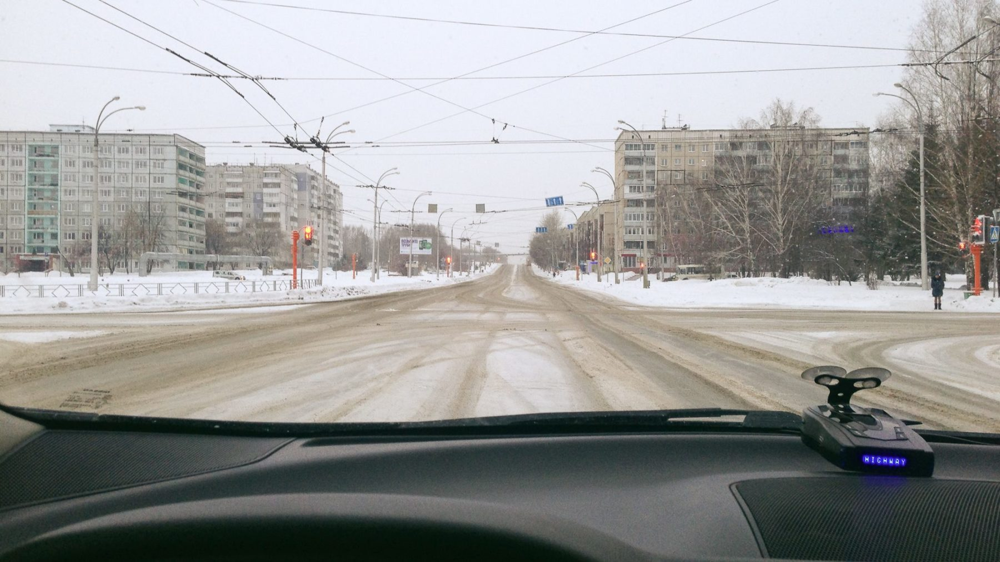

Кемеровчане покушали и спят.
Нет людей в магазинах, нет самих магазинов, нет людей на дорогах.
Нет людей. День без людей.
Нет вечерних петард и утренних поддельно жизнерадостных шоу.
Есть ощущение чистого листа, несмотря на груз прожитых лет.
Осталось шампанское, салаты и в хорошем смысле утка.
Есть планы, но пока нет необходимостей.
Любимое утро в году.